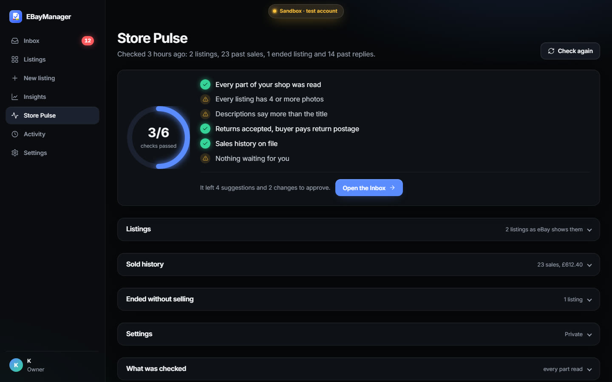
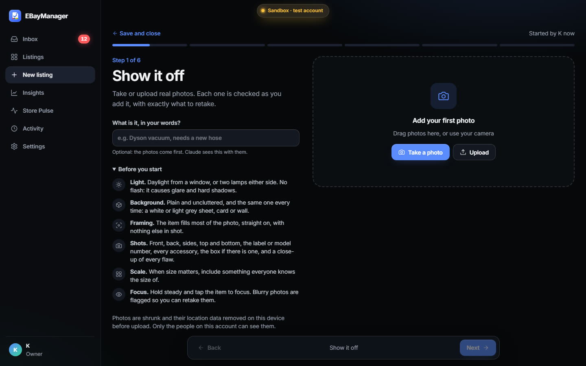
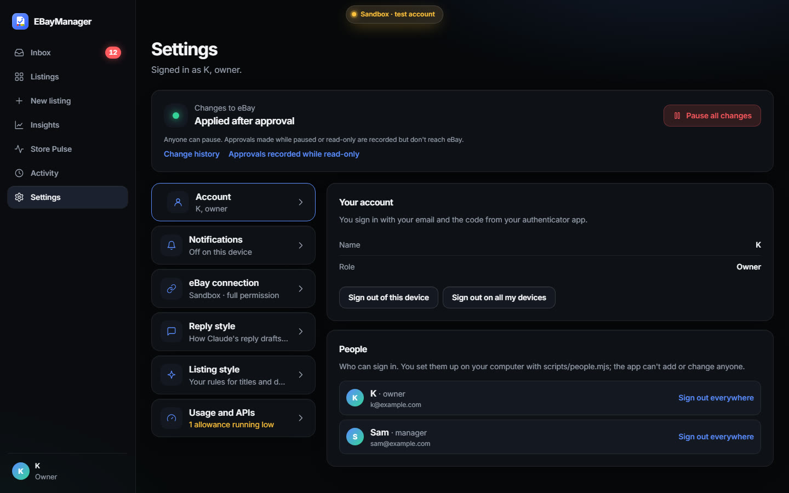
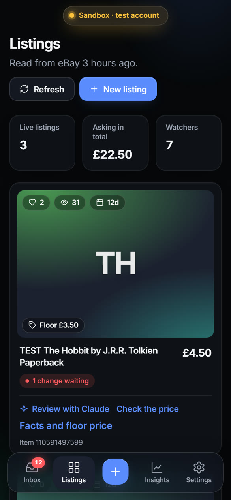
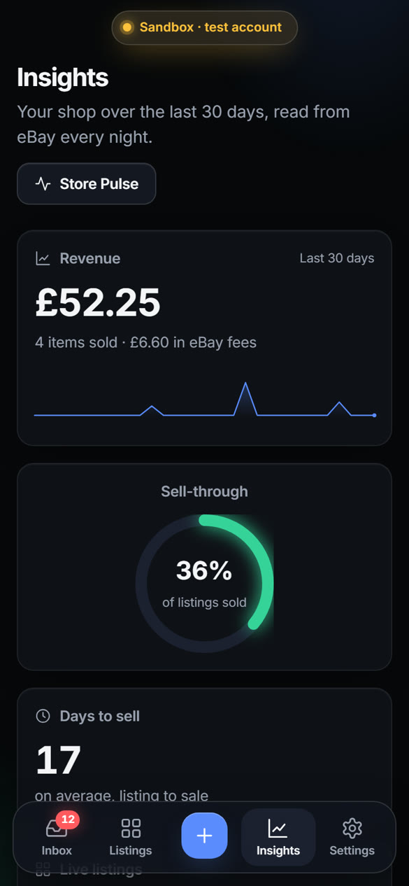
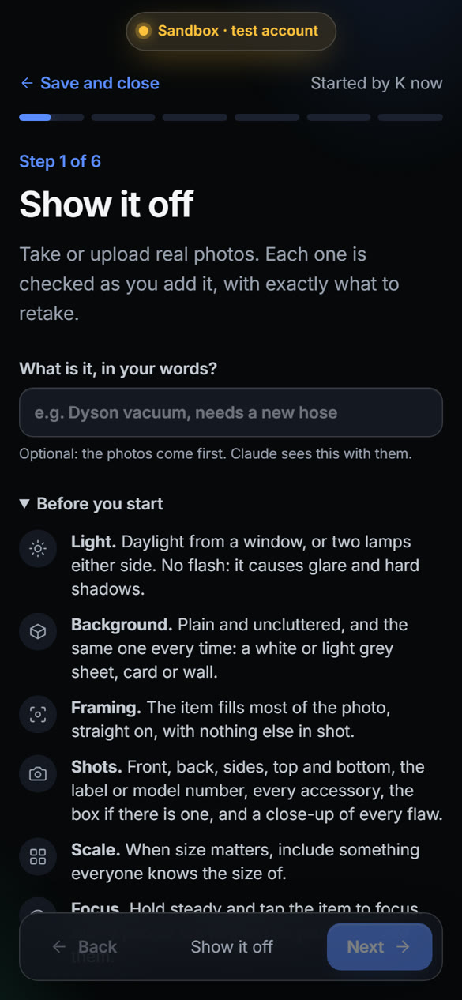
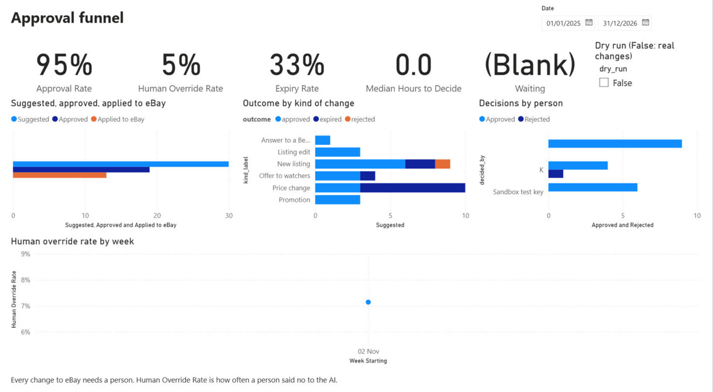
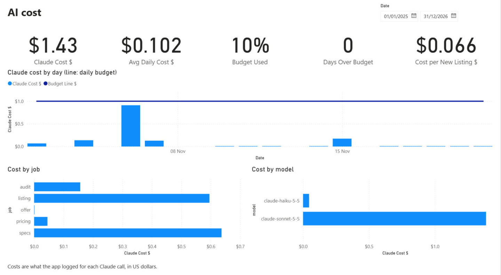

EBayManager: an AI selling assistant that asks first
It reviews eBay listings every night, prices items from the live market, builds new listings from photos and drafts replies to buyers. Nothing changes on eBay until a person taps Approve. That rule is enforced in code, not left to a prompt.
How a change reaches eBay
The AI suggests and a person decides. Every suggestion becomes a signed, expiring proposal, and only one function in the codebase can send it to eBay.
Read
The nightly run snapshots listings, orders and traffic from eBay's APIs.
Think
Rules flag weak listings; Claude reviews them with allowlisted, read-only tools.
Propose
A price, edit, offer or reply becomes a proposal with its reasoning.
Approve
Push notification or Inbox card: Approve or Reject, by POST only.
Write
The write gate checks mode, kill switch and approval, sends it and audits it.
The app
One installable PWA is the website and the phone app: Preact, Tailwind and Framer Motion in a "glass and glow" style, with Web Push approvals. The screenshots use sample data.









The AI, kept on a short lead
Pricing engine
Pools live listings and sold data for the same item in the same condition, classes the market and picks the price that maximises expected profit. It learns from what sells, and moves at most 10% a step.
Claude, server side
Sonnet for photo checks and listing text, Haiku for nightly triage and reply drafts. A tool-use loop with allowlisted tools, a logged cost per call and a hard daily budget.
Never assume facts
Specifications are looked up only for an exactly identified product, each with a verified source; otherwise the app asks.
Self-hosted photo AI
Background removal (IS-Net), spot removal (LaMa) and upscaling (Real-ESRGAN) on ONNX in a container that scales to zero.
Sales ladder
An unsold listing gets one push a week, chosen from its own figures: title, promotion, an offer to watchers, then price.
Failures are loud
If eBay refuses an approved change, an Inbox to-do carries the full diagnostics, and a notification points to it.
Architecture
TypeScript on Azure, all infrastructure as code (Bicep). Sandbox and production are separate resource groups, each reaching only its own database through a managed identity.
Rules enforced in code
- Every eBay write needs approval. Anything that changes the account goes through a proposal and runs only after a person approves it.
- One write gate. Only
ebayWrite()may call eBay write endpoints; source scans in the test suite fail the build if anything else does. - Locked kinds. Prices, messages, offers, new listings, ending listings and promotion can never be set to apply automatically.
- Floors and steps. The owner's floor price is enforced in code; the engine moves at most 10% a step and flags bigger jumps.
- A hidden site. Anyone not signed in gets a blank 404 everywhere; three named people sign in with email and an authenticator code.
- Sandbox first. Everything was built and tested on eBay Sandbox; the real account went live only after go-live tests A–H passed.
Microsoft Power Platform
Built around the app without giving it any power: Power Platform reads through a scoped, read-only API (and a drafts-only intake), never holds eBay tokens, and sees no buyer data. Tested against Sandbox.


Power BI "Shop Health"
A Power BI Project (PBIP/TMDL) generated from code: five pages, 38 DAX measures, fed by nightly CSV exports.
Power Automate
A weekly digest email and approval reminders from the read-only API. Built and run against Sandbox, then switched off.
Power Apps "Stock Room"
A Dataverse canvas app to log things around the house; items marked Sell go to the app as drafts, once each.
Copilot Studio
"Ask the shop": an agent whose only tools are nine read-only MCP tools on the app's own MCP endpoint.
Custom connectors
Two OpenAPI 2.0 connectors: one that only reads, one that only makes drafts.
Proven boundaries
Tests follow every import from the read-only code and fail if one reaches the write gate, eBay or Claude.